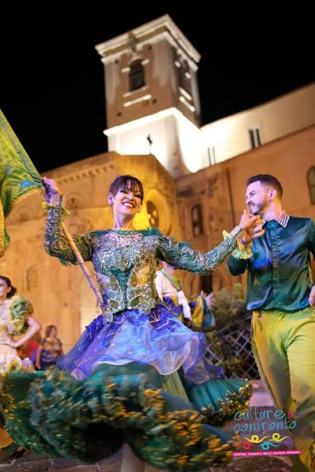

CityLoop Quest — Tropéa


Le 3 mai, la fête d’I Tri da Cruci transforme le quartier du Borgo en scène populaire. Le nom, « les trois croix », renvoie à un ancien calvaire et à une dévotion locale. Tambours, décorations, processions et spectacles attirent les habitants bien au-delà du seul cadre religieux.
Les géants Mata et Grifone apparaissent dans plusieurs fêtes calabraises et siciliennes. Portées par des danseurs, leurs hautes silhouettes tournent au rythme des tambours. Le couple légendaire mêle récits de conquête, rencontres entre peuples et humour de rue ; chaque ville adapte l’histoire à sa manière.
À Tropéa, le « camiu », un chameau de feu construit en papier et en armature légère, constitue l’un des moments attendus. Des artifices le font danser, tourner et cracher des étincelles. La scène rappelle de façon burlesque les anciennes menaces venues de la mer et la victoire symbolique de la communauté.
Les fêtes mariales occupent aussi une place centrale, notamment autour de la Madonna di Romania. Processions, cloches et ex-voto relient la cathédrale aux quartiers. Ces événements ne sont pas des spectacles figés : ils mobilisent confréries, familles, musiciens et bénévoles.
Pour comprendre une tradition, il faut accepter sa part de bruit, de contradiction et d’improvisation. Une procession peut côtoyer un feu d’artifice, une prière précéder une plaisanterie et un géant de carton devenir le héros de la soirée. C’est précisément cette liberté qui rend les fêtes vivantes.